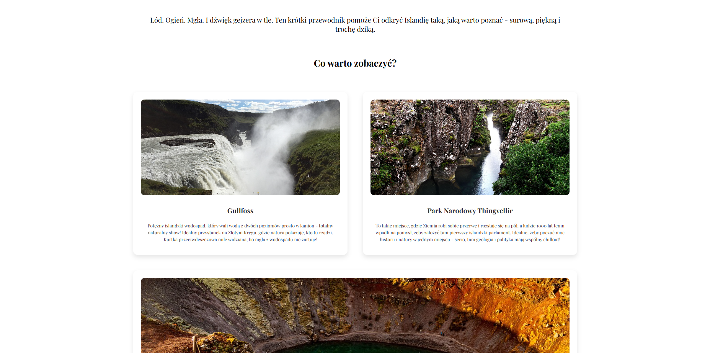
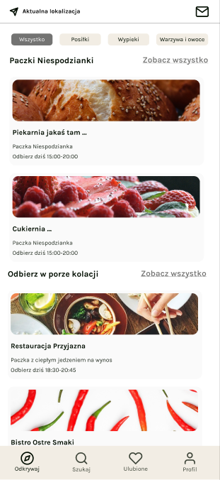
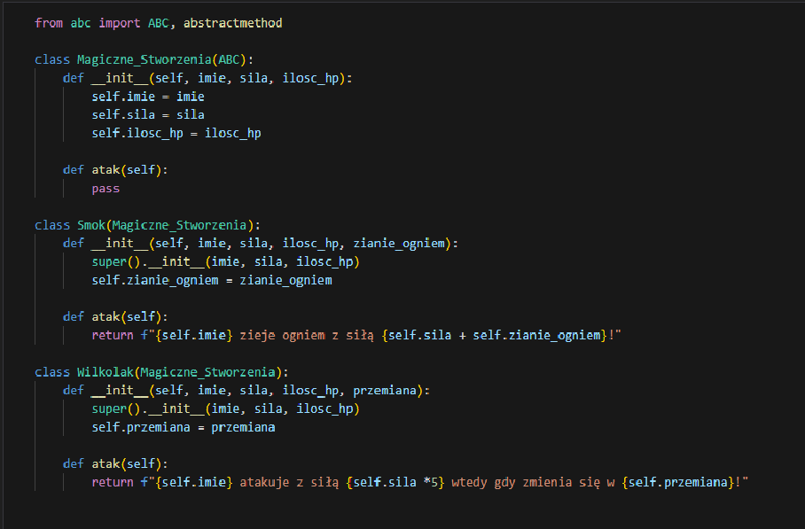
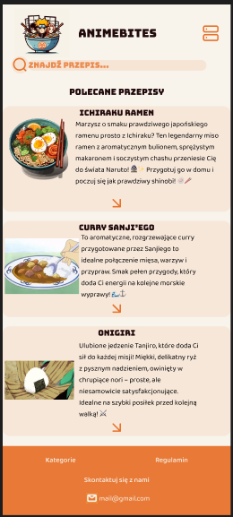

Projekty
Blog podróżniczy po Islandii
Design w Figma: Zobacz projekt
Kod źródłowy: GitHub repo
Minimalistyczny, responsywny blog o Islandii — od pomysłu, przez design, po wdrożenie. Skupiałam się na czytelnym UI i przyjaznym UX.
Czego się nauczyłam:
Przy tym projekcie nauczyłam się tworzyć responsywne layouty od podstaw, odwzorowywać design z Figmy, organizować czytelny kod HTML i CSS oraz poprawiać użyteczność UI. Wykorzystałam też JavaScript do obsługi dynamicznych ciekawostek, co pozwoliło mi lepiej zrozumieć interakcje w front-endzie i zachowanie komponentów na różnych ekranach.
Design aplikacji mobilnej - "SaveIt"
Design w Figma: Zobacz projekt
Zaprojektowałam aplikację mobilną inspirowaną TooGoodToGo, której celem jest ratowanie niesprzedanego jedzenia z lokalnych miejsc. Skupiłam się na intuicyjnym UX flowie, prostym, czytelnym UI i strukturze dostosowanej do codziennego użytkowania. Praca nad projektem pozwoliła mi lepiej zrozumieć planowanie interfejsów mobilnych, budowanie design systemu w Figma, korzystanie z auto layoutu i wariantów, a także znaczenie hierarchii wizualnej i dostępności w projektowaniu aplikacji.
Czego się nauczyłam:
Dzięki temu projektowi rozwinęłam umiejętność projektowania interfejsów mobilnych z myślą o użytkowniku, pracy z auto layoutem i wariantami w Figma, budowania spójnego design systemu oraz tworzenia przejrzystego UX flowu. Zrozumiałam też, jak ważna jest dostępność, hierarchia wizualna i konsekwencja w projektowaniu aplikacji.
Bestiariusz Magiczny — system zarządzania magicznymi stworzeniami
Kod źródłowy: GitHub repo
Projekt zaliczeniowy w Pythonie, w którym stworzyłam klasę abstrakcyjną oraz klasy dziedziczące (Smok, Wilkołak). Każda klasa implementuje unikalny sposób ataku, a misje łączą stworzenia z lokalizacjami, pokazując kompozycję obiektów.
Czego się nauczyłam:
Tworzenia i używania klas abstrakcyjnych (Python abc). Dziedziczenia i polimorfizmu — każda klasa ma własną metodę atak(). Kompozycji — łączenia obiektów w bardziej złożone struktury (Misja z Lokalizacją i Stworzeniem). Praktycznej organizacji kodu i testowania metod. Kod jest napisany z myślą o czytelności i rozszerzalności, co świetnie wpasowuje się w zasady OOP i wzorce projektowe.
AnimeBites - mój pierwszy projekt mobilnej strony z przepisami inspirowanymi anime
Design w Figma: Zobacz projekt
To był mój pierwszy ever projekt, dzięki któremu nauczyłam się podstaw frontendu i projektowania UI/UX. Stworzyłam responsywną stronę zoptymalizowaną na telefony, gdzie użytkownik może szybko przeglądać 3 autorskie przepisy, korzystać z prostej wyszukiwarki oraz skontaktować się ze mną przez stopkę.
Czego się nauczyłam:
Projekt pomógł mi zrozumieć jak budować przyjazny interfejs na małych ekranach, jak pracować z interakcjami i nawigacją oraz jak łączyć design z funkcjonalnością.